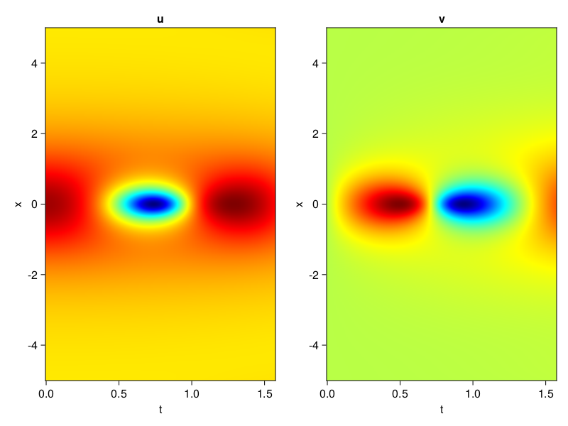
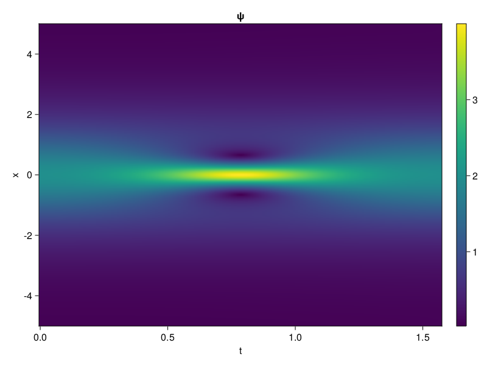

Schrödinger equation
The nonlinear Shrödinger equation is given by
\[\mathrm{i} \partial_t \psi=-\frac{1}{2} \sigma \partial_{x x} \psi-\beta|\psi|^2 \psi\]
Let $\sigma=\beta=1, \psi=u+v i$, the equation can be transformed into a system of partial differential equations
using ModelingToolkit, IntervalSets, Sophon, CairoMakie
using Optimization, OptimizationOptimJL
@parameters x,t
@variables u(..), v(..)
Dₜ = Differential(t)
Dₓ² = Differential(x)^2
eqs=[Dₜ(u(x,t)) ~ -Dₓ²(v(x,t))/2 - (abs2(v(x,t)) + abs2(u(x,t))) * v(x,t),
Dₜ(v(x,t)) ~ Dₓ²(u(x,t))/2 + (abs2(v(x,t)) + abs2(u(x,t))) * u(x,t)]
bcs = [u(x, 0.0) ~ 2sech(x),
v(x, 0.0) ~ 0.0,
u(-5.0, t) ~ u(5.0, t),
v(-5.0, t) ~ v(5.0, t)]
domains = [x ∈ Interval(-5.0, 5.0),
t ∈ Interval(0.0, π/2)]
@named pde_system = PDESystem(eqs, bcs, domains, [x,t], [u(x,t),v(x,t)])\[ \begin{align} \frac{\mathrm{d}}{\mathrm{d}t} u\left( x, t \right) =& - \frac{1}{2} \frac{\mathrm{d}^{2}}{\mathrm{d}x^{2}} v\left( x, t \right) - \left( \left|u\left( x, t \right)\right|^{2} + \left|v\left( x, t \right)\right|^{2} \right) v\left( x, t \right) \\ \frac{\mathrm{d}}{\mathrm{d}t} v\left( x, t \right) =& \frac{1}{2} \frac{\mathrm{d}^{2}}{\mathrm{d}x^{2}} u\left( x, t \right) + \left( \left|u\left( x, t \right)\right|^{2} + \left|v\left( x, t \right)\right|^{2} \right) u\left( x, t \right) \end{align} \]
pinn = PINN(u= Siren(2,1; hidden_dims=16,num_layers=4, omega = 1.0),
v= Siren(2,1; hidden_dims=16,num_layers=4, omega = 1.0))
sampler = QuasiRandomSampler(2000, (500,500,20,20))
strategy = NonAdaptiveTraining(1,(10,10,1,1))
prob = Sophon.discretize(pde_system, pinn, sampler, strategy)OptimizationProblem. In-place: true
u0: ComponentVector{Float64}(u = (layer_1 = (weight = [0.4470614194869995 0.3212841749191284; -0.29066216945648193 0.44087910652160645; … ; 0.4013538360595703 -0.42375457286834717; 0.3060559630393982 0.29243922233581543], bias = [0.0; 0.0; … ; 0.0; 0.0;;]), layer_2 = (weight = [-0.3285228908061981 0.3619554340839386 … -0.5887080430984497 0.09661146253347397; 0.5148648619651794 -0.3782546818256378 … -0.004929941147565842 -0.5315331816673279; … ; 0.5547765493392944 -0.5482711791992188 … 0.5198485255241394 0.5092852711677551; 0.5163068175315857 -0.19408980011940002 … 0.00027046678587794304 -0.4621829688549042], bias = [0.0; 0.0; … ; 0.0; 0.0;;]), layer_3 = (weight = [-0.448452889919281 -0.31290203332901 … 0.563377857208252 -0.5146349668502808; 0.10551540553569794 -0.5078815817832947 … -0.445439875125885 0.5025567412376404; … ; 0.2576594948768616 -0.24039167165756226 … -0.41027671098709106 0.01778050698339939; -0.59803706407547 -0.4680594205856323 … -0.5285406708717346 0.39980149269104004], bias = [0.0; 0.0; … ; 0.0; 0.0;;]), layer_4 = (weight = [-0.5911495089530945 -0.5312926769256592 … -0.3588623106479645 -0.2975558042526245; 0.03425591439008713 -0.5970599055290222 … -0.320845365524292 0.5347976088523865; … ; 0.4595315158367157 0.4084170162677765 … 0.003529135137796402 0.22472766041755676; -0.10396633297204971 0.6022300124168396 … -0.11022349447011948 0.35304558277130127], bias = [0.0; 0.0; … ; 0.0; 0.0;;]), layer_5 = (weight = [0.0351247638463974 0.475633829832077 … 0.0817444771528244 -0.5830474495887756], bias = [0.0;;])), v = (layer_1 = (weight = [-0.42848527431488037 -0.21886295080184937; -0.005129754543304443 0.07174801826477051; … ; 0.07359933853149414 -0.09998589754104614; -0.14118564128875732 -0.08345776796340942], bias = [0.0; 0.0; … ; 0.0; 0.0;;]), layer_2 = (weight = [-0.2295612394809723 -0.10732778906822205 … 0.4409509301185608 0.22076191008090973; -0.5916028618812561 -0.21780137717723846 … 0.5492907762527466 -0.09466541558504105; … ; -0.4979169964790344 -0.20152424275875092 … 0.13874252140522003 -0.5757129192352295; -0.3657079339027405 0.3611781895160675 … 0.2064346969127655 0.1979721188545227], bias = [0.0; 0.0; … ; 0.0; 0.0;;]), layer_3 = (weight = [0.5584134459495544 -0.4033050835132599 … -0.12193094938993454 0.5008845329284668; -0.03351627290248871 -0.09826835244894028 … 0.5917496681213379 0.6098735332489014; … ; -0.29373306035995483 -0.21662592887878418 … -0.15958671271800995 0.22492440044879913; -0.29704976081848145 0.10261940211057663 … 0.16711299121379852 -0.24247364699840546], bias = [0.0; 0.0; … ; 0.0; 0.0;;]), layer_4 = (weight = [-0.14199680089950562 -0.2334226816892624 … 0.14137747883796692 0.27932828664779663; 0.011568021029233932 -0.024704165756702423 … 0.26796555519104004 0.22421936690807343; … ; -0.12651048600673676 -0.3477514386177063 … -0.37979573011398315 -0.38130515813827515; -0.3118741810321808 -0.2523590624332428 … -0.3716881275177002 0.1207725778222084], bias = [0.0; 0.0; … ; 0.0; 0.0;;]), layer_5 = (weight = [-0.14756010472774506 0.5686713457107544 … -0.04295516014099121 0.48816996812820435], bias = [0.0;;])))Now we train the neural nets and resample data while training.
function train(pde_system, prob, sampler, strategy, resample_period = 500, n=10)
bfgs = BFGS()
res = Optimization.solve(prob, bfgs; maxiters=2000)
for i in 1:n
data = Sophon.sample(pde_system, sampler, strategy)
prob = remake(prob; u0=res.u, p=data)
res = Optimization.solve(prob, bfgs; maxiters=resample_period)
end
return res
end
res = train(pde_system, prob, sampler, strategy)u: ComponentVector{Float64}(u = (layer_1 = (weight = [1.0737463079017182 0.4847763279731395; -0.4791149148932093 0.4894629030890551; … ; 0.5773476798199412 0.036775141813044435; 1.2806523249022295 0.1892347022116702], bias = [-0.47589229902860664; -0.37835654383707523; … ; 0.08477403744173317; -0.02680572748454856;;]), layer_2 = (weight = [-0.30207786452683066 0.3361611857139797 … -0.405547195779899 0.14804615655167078; 0.5860206095463796 -0.448381203278553 … -0.19220595723132056 -0.10000187671002399; … ; 0.2627634747737971 -1.0676861871724774 … 0.7676212840938648 0.5225721064272488; 0.2696073024353251 -0.20108561686840362 … 0.07152180902471052 -0.5417100831599703], bias = [-0.1991132464800433; 0.05182784034040892; … ; 0.047650792102030375; -0.051757611602557776;;]), layer_3 = (weight = [-0.09678461059080513 -0.29225159888386293 … -0.06905287615317107 -0.40561689906046156; 0.593491631921303 -0.6594510218484322 … -0.1709806309459122 0.33405227272211785; … ; -0.032684248057316914 -0.1660729239708818 … -0.10681602592212433 0.12229226210769507; -0.8049966672903547 -0.3960395648989923 … -0.34816541028783166 0.12493486784371892], bias = [-0.06391500272196442; -0.4408692147411621; … ; 0.10882506443421461; 0.39175896349497374;;]), layer_4 = (weight = [-0.38238874524085675 -0.8865537832425436 … -0.2982574242835704 -0.040480830057572297; 0.26318302644050723 -0.6768667693396114 … -0.10596789818346361 0.25694440001150937; … ; 0.060358382725233715 -0.14345290105861677 … -0.10287063055290217 0.6102770044597267; -0.05585615941588031 0.38328097213684637 … 0.005293112866770069 1.119690398536708], bias = [0.10156608424271928; -0.02544126323906263; … ; -0.05523427357903573; 0.35014700709376195;;]), layer_5 = (weight = [0.35836532007957766 0.8633678746191512 … 0.5694975798975221 -0.049027950892237805], bias = [-0.411662827003449;;])), v = (layer_1 = (weight = [-1.1529054630137077 -1.2244659509322728; -0.2909025054981726 0.08792970586533083; … ; 0.3047945121410012 -0.32510207389014933; -0.5452249307058957 -0.026868541986376757], bias = [0.8135130408247141; 0.20848372617172348; … ; -0.019092487093436396; 0.049829761838111435;;]), layer_2 = (weight = [-0.07760304286474198 -0.2266233270286675 … 0.4879925751986256 0.32430550023669347; 0.03970093446511737 -0.2666996849388292 … 0.5846753005662831 0.006506572982151793; … ; -0.7497565049713122 -0.29887450712861824 … 0.1646476458273296 -0.7629900085441222; 0.027429359125320872 0.48632398786439895 … 0.3277759393577874 0.2876555538003626], bias = [-0.36596007572680705; -0.14908308617576183; … ; -0.11481435708498614; 0.21511304045138374;;]), layer_3 = (weight = [0.6171380483130681 -0.0415804945464874 … 0.013722070414027041 0.5178886785225402; 0.016173858266850756 -0.1259072972833772 … 0.2314351268929857 0.49223462429317355; … ; -0.2205746184908188 0.006112169533465193 … 0.2430660026604563 0.2542437546125008; -0.418151605778239 -0.4197088751862352 … 0.5292621136465399 -0.24721227076873303], bias = [-0.3639035229633124; -0.18131303170252186; … ; 0.3224068141552413; 0.12629573578687928;;]), layer_4 = (weight = [-0.1361413947144892 0.0067994927303077065 … -0.09577568727133992 0.1855446659213014; -0.49430992191635975 0.2896650899211334 … -0.009053700998363765 0.30292609925929354; … ; -0.13371518469326404 -0.5464383247133798 … -0.4613918801503255 -0.07303919695923332; -0.7091803968562527 -0.32871421855728844 … -0.7233981066572867 0.20788590264086673], bias = [0.35143352348037926; 0.08156413935554817; … ; 0.06567174637216211; -0.5151997898519433;;]), layer_5 = (weight = [0.7127640021695302 0.2516476733064561 … -0.8168462812126078 0.22894494138241148], bias = [0.3359982415874027;;])))phi = pinn.phi
ps = res.u
xs, ts= [infimum(d.domain):0.01:supremum(d.domain) for d in pde_system.domain]
u = [sum(phi.u(([x,t]), ps.u)) for x in xs, t in ts]
v = [sum(phi.v(([x,t]), ps.v)) for x in xs, t in ts]
ψ = @. sqrt(u^2+ v^2)
axis = (xlabel="t", ylabel="x", title="u")
fig, ax1, hm1 = CairoMakie.heatmap(ts, xs, u', axis=axis)
ax2, hm2= CairoMakie.heatmap(fig[1, end+1], ts, xs, v', axis= merge(axis, (; title="v")))
display(fig)
axis = (xlabel="t", ylabel="x", title="ψ")
fig, ax1, hm1 = CairoMakie.heatmap(ts, xs, ψ', axis=axis, colormap=:jet)
Colorbar(fig[:, end+1], hm1)
display(fig)
Customize Sampling
Bascially any sampling method is supportted.
using StatsBase
data = vec([[x, t] for x in xs, t in ts])
wv = vec(ψ)
new_data = wsample(data, wv, 2000)
new_data = reduce(hcat, new_data)
fig, ax = scatter(new_data[2,:], new_data[1,:])
prob.p[1] = new_data
prob.p[2] = new_data
prob = remake(prob; u0 = res.u)
# res = Optimization.solve(prob, bfgs; maxiters=1000)OptimizationProblem. In-place: true
u0: ComponentVector{Float64}(u = (layer_1 = (weight = [1.0737463079017182 0.4847763279731395; -0.4791149148932093 0.4894629030890551; … ; 0.5773476798199412 0.036775141813044435; 1.2806523249022295 0.1892347022116702], bias = [-0.47589229902860664; -0.37835654383707523; … ; 0.08477403744173317; -0.02680572748454856;;]), layer_2 = (weight = [-0.30207786452683066 0.3361611857139797 … -0.405547195779899 0.14804615655167078; 0.5860206095463796 -0.448381203278553 … -0.19220595723132056 -0.10000187671002399; … ; 0.2627634747737971 -1.0676861871724774 … 0.7676212840938648 0.5225721064272488; 0.2696073024353251 -0.20108561686840362 … 0.07152180902471052 -0.5417100831599703], bias = [-0.1991132464800433; 0.05182784034040892; … ; 0.047650792102030375; -0.051757611602557776;;]), layer_3 = (weight = [-0.09678461059080513 -0.29225159888386293 … -0.06905287615317107 -0.40561689906046156; 0.593491631921303 -0.6594510218484322 … -0.1709806309459122 0.33405227272211785; … ; -0.032684248057316914 -0.1660729239708818 … -0.10681602592212433 0.12229226210769507; -0.8049966672903547 -0.3960395648989923 … -0.34816541028783166 0.12493486784371892], bias = [-0.06391500272196442; -0.4408692147411621; … ; 0.10882506443421461; 0.39175896349497374;;]), layer_4 = (weight = [-0.38238874524085675 -0.8865537832425436 … -0.2982574242835704 -0.040480830057572297; 0.26318302644050723 -0.6768667693396114 … -0.10596789818346361 0.25694440001150937; … ; 0.060358382725233715 -0.14345290105861677 … -0.10287063055290217 0.6102770044597267; -0.05585615941588031 0.38328097213684637 … 0.005293112866770069 1.119690398536708], bias = [0.10156608424271928; -0.02544126323906263; … ; -0.05523427357903573; 0.35014700709376195;;]), layer_5 = (weight = [0.35836532007957766 0.8633678746191512 … 0.5694975798975221 -0.049027950892237805], bias = [-0.411662827003449;;])), v = (layer_1 = (weight = [-1.1529054630137077 -1.2244659509322728; -0.2909025054981726 0.08792970586533083; … ; 0.3047945121410012 -0.32510207389014933; -0.5452249307058957 -0.026868541986376757], bias = [0.8135130408247141; 0.20848372617172348; … ; -0.019092487093436396; 0.049829761838111435;;]), layer_2 = (weight = [-0.07760304286474198 -0.2266233270286675 … 0.4879925751986256 0.32430550023669347; 0.03970093446511737 -0.2666996849388292 … 0.5846753005662831 0.006506572982151793; … ; -0.7497565049713122 -0.29887450712861824 … 0.1646476458273296 -0.7629900085441222; 0.027429359125320872 0.48632398786439895 … 0.3277759393577874 0.2876555538003626], bias = [-0.36596007572680705; -0.14908308617576183; … ; -0.11481435708498614; 0.21511304045138374;;]), layer_3 = (weight = [0.6171380483130681 -0.0415804945464874 … 0.013722070414027041 0.5178886785225402; 0.016173858266850756 -0.1259072972833772 … 0.2314351268929857 0.49223462429317355; … ; -0.2205746184908188 0.006112169533465193 … 0.2430660026604563 0.2542437546125008; -0.418151605778239 -0.4197088751862352 … 0.5292621136465399 -0.24721227076873303], bias = [-0.3639035229633124; -0.18131303170252186; … ; 0.3224068141552413; 0.12629573578687928;;]), layer_4 = (weight = [-0.1361413947144892 0.0067994927303077065 … -0.09577568727133992 0.1855446659213014; -0.49430992191635975 0.2896650899211334 … -0.009053700998363765 0.30292609925929354; … ; -0.13371518469326404 -0.5464383247133798 … -0.4613918801503255 -0.07303919695923332; -0.7091803968562527 -0.32871421855728844 … -0.7233981066572867 0.20788590264086673], bias = [0.35143352348037926; 0.08156413935554817; … ; 0.06567174637216211; -0.5151997898519433;;]), layer_5 = (weight = [0.7127640021695302 0.2516476733064561 … -0.8168462812126078 0.22894494138241148], bias = [0.3359982415874027;;])))